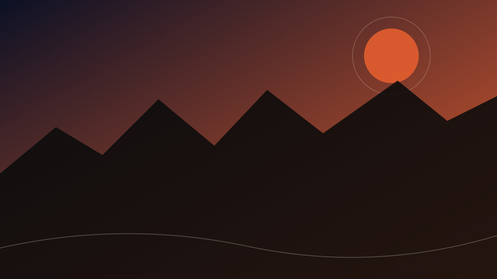
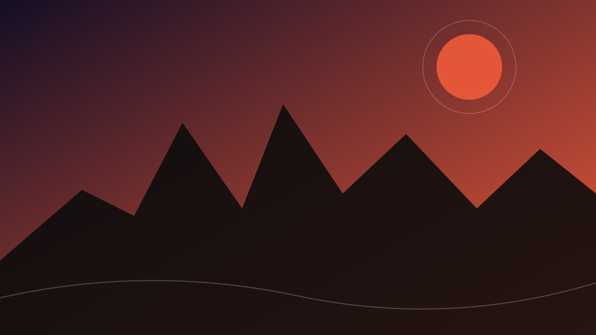
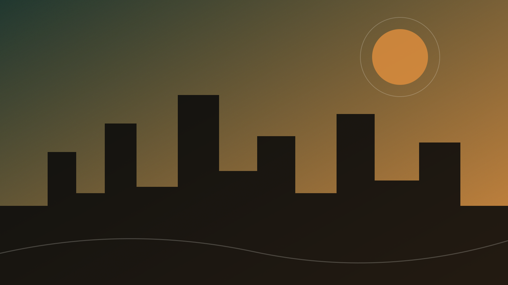
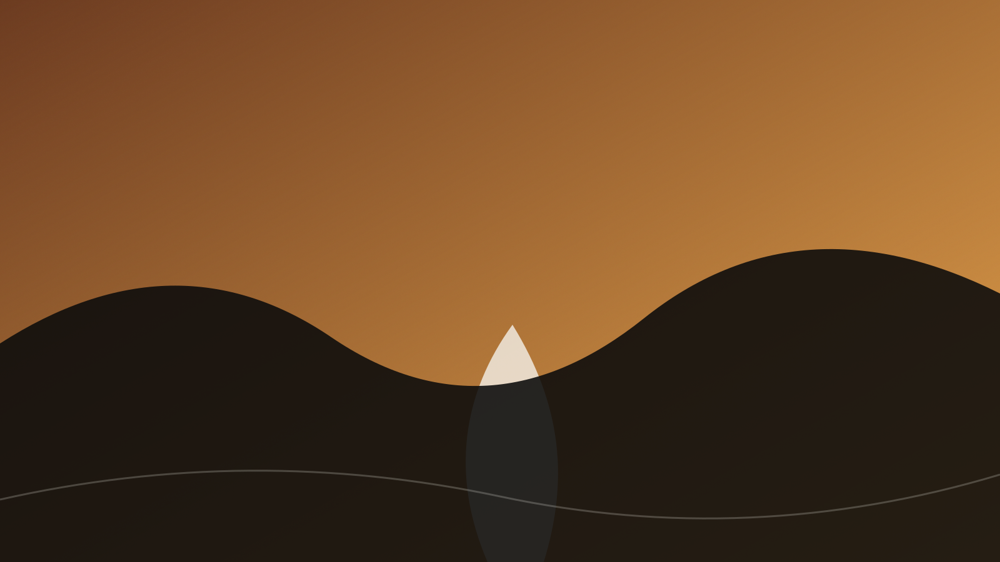
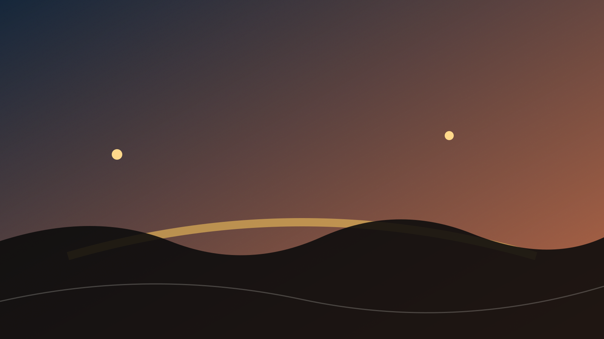
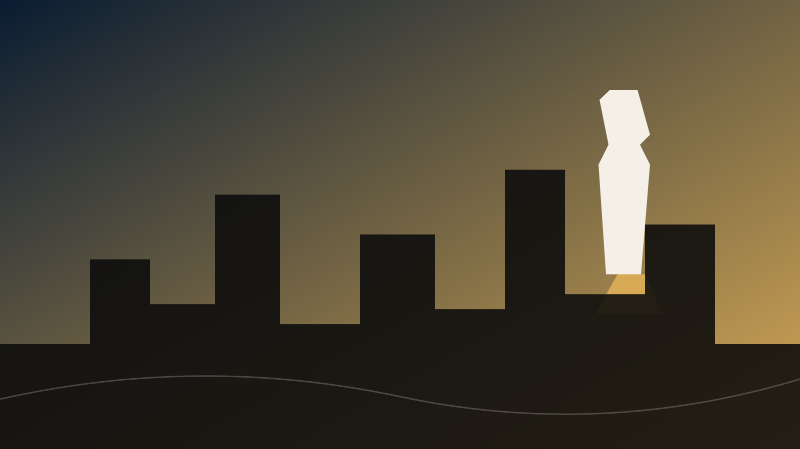
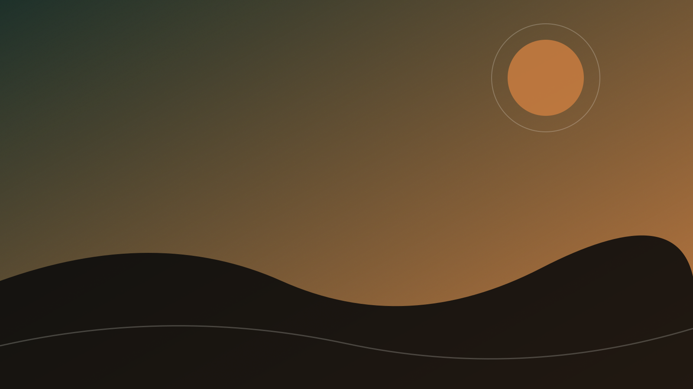
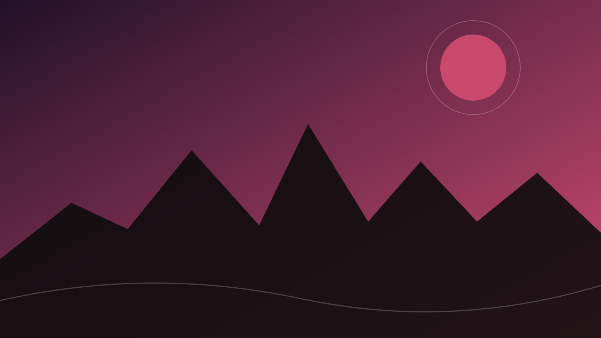
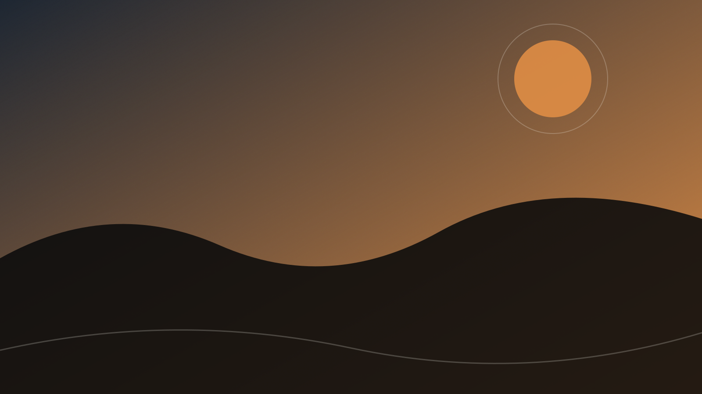

Brisket ist kein Programmpunkt.
Es ist ein Grund für diese Reise. Franklin, InterStellar und Terry Black's in Austin. Truth BBQ in Houston.
Die Pflichtauswahl
26.08. — 10.09.2026
Palazzo-Pool. Legendäres BBQ. Leere Landstraßen. Live Music. NASA. Und genug Zeit, das alles wirklich zu genießen.
Warum genau diese Reise?
Kein Sehenswürdigkeiten-Marathon. Kein täglicher Hotelwechsel. Kein Urlaub, von dem man Urlaub braucht.
Wir verbinden das Beste aus zwei Welten: Las Vegas für große Momente und Texas für alles, was echt ist.
Gute Hotels, gutes Essen, ein entspannter Roadtrip und wenige Highlights, an die wir uns Jahre später noch erinnern.
Die Route
Las Vegas liegt bewusst unter der Woche. Texas bekommt den Raum, den es verdient.

01 / Las Vegas
Zwei Nächte im Palazzo. Pool statt Programmstress. Sphere, Shopping und das erste Dinner, das sich nach Urlaub anfühlt.

02 / Austin
Morgens South Congress. Mittags Brisket. Nachmittags Barton Springs. Abends Musik, die nicht für Touristen gespielt wird.
Eat Franklin, InterStellar, Terry Black's
Feel Barton Springs, Rooftops, Downtown
Hear Live Music ohne festen Zeitplan

03 / Hill Country
Zwei Tage zwischen Fredericksburg, Weingütern und Enchanted Rock. Keine Checkliste. Nur eine gute Straße und Zeit für spontane Stopps.

04 / San Antonio
Alamo am Tag. Pearl District am Nachmittag. Tex-Mex und ein langer Abend direkt am River Walk.

05 / Houston
Space Center Houston. Mission Control. Saturn V. Der Moment, in dem diese Reise nicht nur gut, sondern unvergesslich wird.

06 / Austin Return
Kein Pflichtprogramm. Noch ein BBQ. Noch ein Song. Noch ein Abend, der genau so wird, wie wir ihn unterwegs entscheiden.

07 / Las Vegas Finale
Zurück ins Palazzo. Pool, Shopping, eine Show und das letzte Dinner mit Blick auf den Strip. Rückflug am 10. September.
Die Dinge, die zählen
Es ist ein Grund für diese Reise. Franklin, InterStellar und Terry Black's in Austin. Truth BBQ in Houston.
Die PflichtauswahlPalazzo in Las Vegas. Hochwertig in Downtown Austin. Boutique im Hill Country. River Walk in San Antonio.
Premium ohne UnsinnEine große Show. Ein besonderes Dinner. Zwei Musikabende. Dazwischen bleibt Platz für die beste Idee des Tages.
Reserviert, nicht verplantBudget
Premium Economy, hochwertige Hotels und gutes Essen. Wir optimieren Preis und Erlebnis – nicht den letzten Euro.
inklusive Flügen, Hotels, Mietwagen, Essen, Shows und Eintritten
Der größte Hebel bleibt der Preis der Premium-Economy-Flüge.
Wer kommt mit?
Was wäre dein Grund, dabei zu sein?